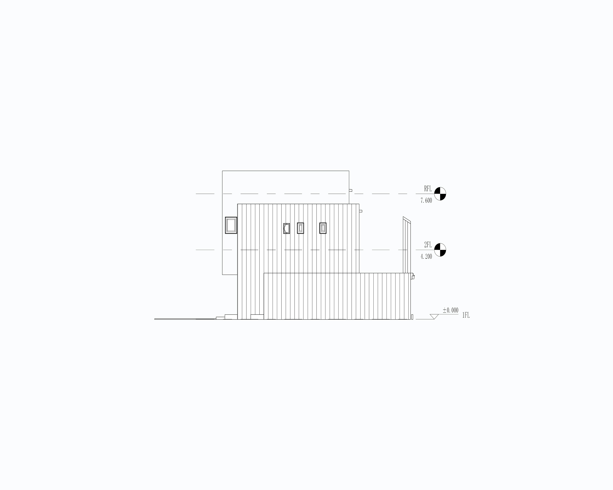
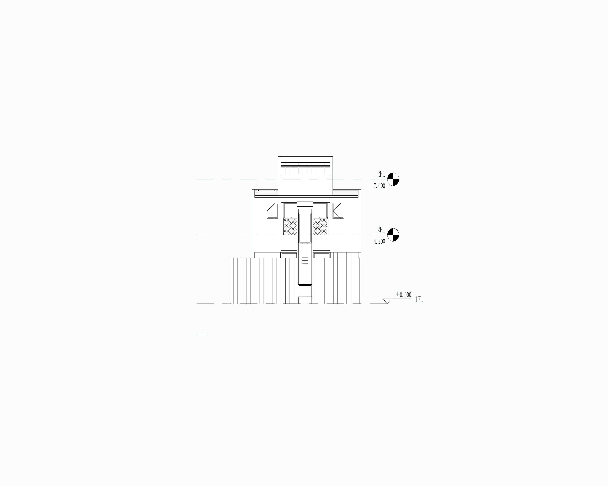
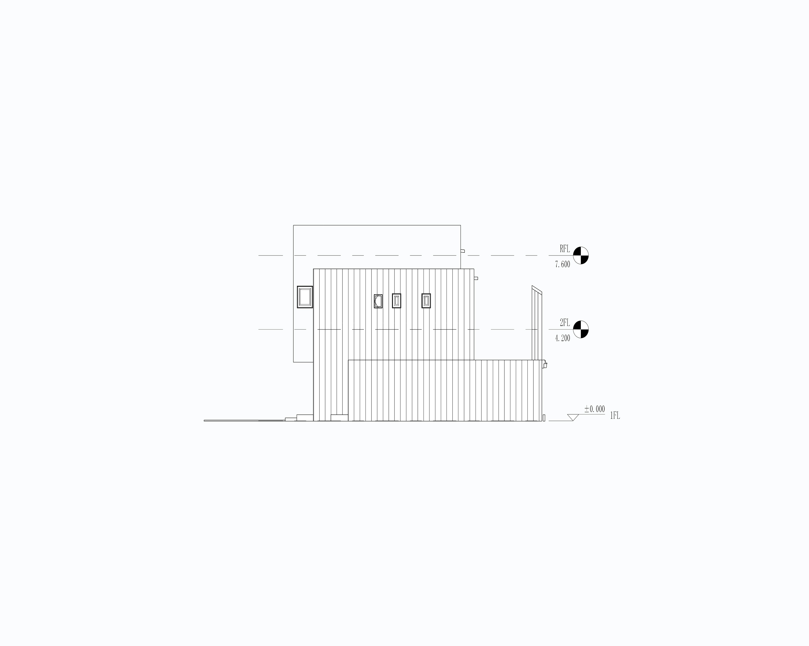
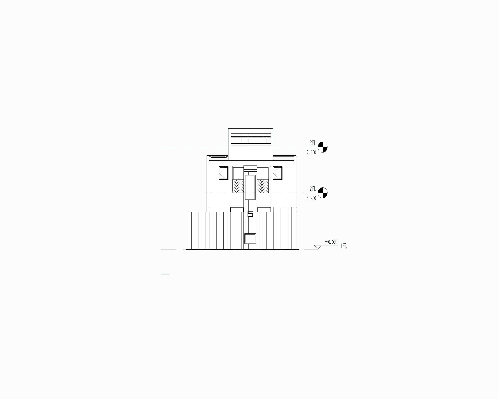

木村浩一 1960年／滋賀県生まれ 1991年／フォルム・木村浩一建築研究所を開設
Kouichi Kimura
1960 Born in Kusatsu City, Shiga prefecture, Japan
1991 Established FORM / Kouichi Kimura Architects
“His works, mainly residences, are characterized by a poetic and functional minimalism in which a sense of openness and privacy is achieved through careful slicing and layering of wall elements, light and shadows, volumes and spaces.”
RICHARD MEIER (Guest editor of L'Arca December 275)


 


